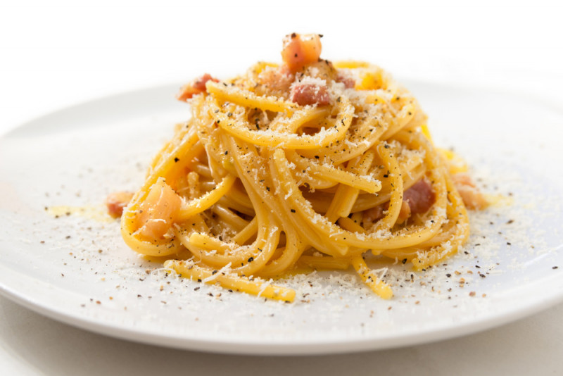

Spaghetti Alla Carbonara

Description
This classic spaghetti alla carbonara recipe is smooth, creamy, and full of rich Italian flavor. Carbonara is a Roman dish made with eggs, hard cheese, and cured pork. Its signature rich and silky sauce comes from beaten eggs tossed with hot pasta.
Ingredients
- Spaghetti 0.7 lb
- Guanciale 5 oz
- Egg yolks 6 ct
- Pecorino Romano cheese 1/2 cup
- Black pepper to taste
Preparation
To prepare spaghetti carbonara start by putting a pot of salted water on the burner to cook the pasta. In the meantime,
- Remove the pork rind from the guanciale
- Cut it first into slices and then into strips about 1/2" (1cm) thick. The removed rind can be reused to flavor other things
- Put the pieces into a non-stick pan and brown for about 15 minutes over medium heat, being careful not to burn it or it will smell too strong
- Meanwhile, put spaghetti in boiling water and cook for the time indicated on the package
- In the meantime, pour the yolks into a bowl
- and add most of the Pecorino cheese needed for the recipe. The remaining part will be used just before serving
- Season with black pepper and whip by hand
- Add a tablespoon of cooking water to dilute the mixture and stir
- In the meantime the guanciale will be cooked, turn off the burner and set it aside
- Drain the pasta al dente directly into the pan with the guanciale and stir it briefly to season it
- Remove from heat and pour the mixture of eggs and pecorino cheese into the pan. Mix quickly to combine
- To make it very creamy, if necessary, you can add a little cooking water to your pasta
- Serve spaghetti carbonara immediately with the remaining pecorino cheese and ground black pepper on top.
Buon Appetito!